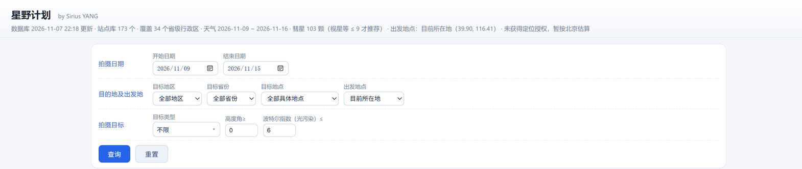
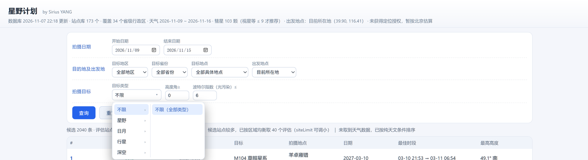
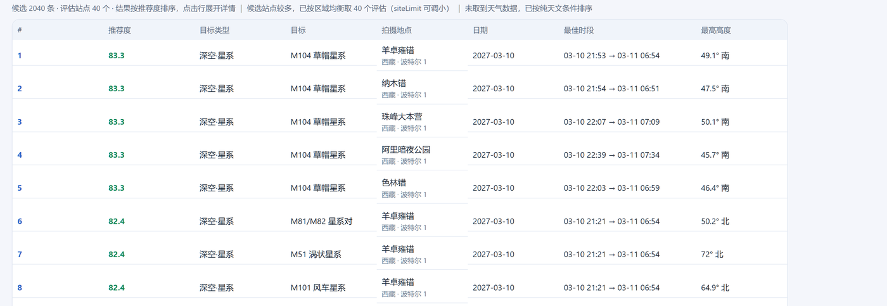
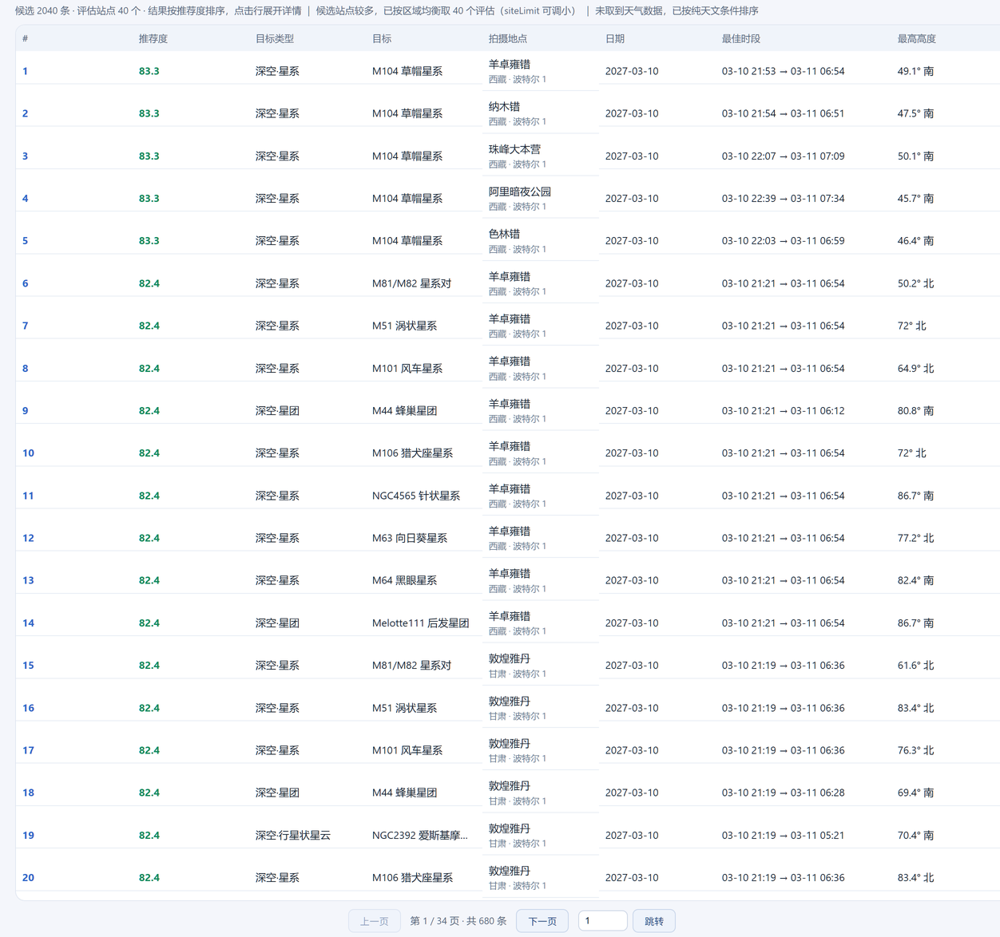
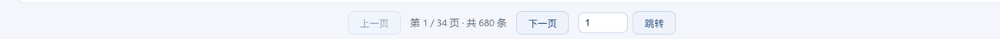
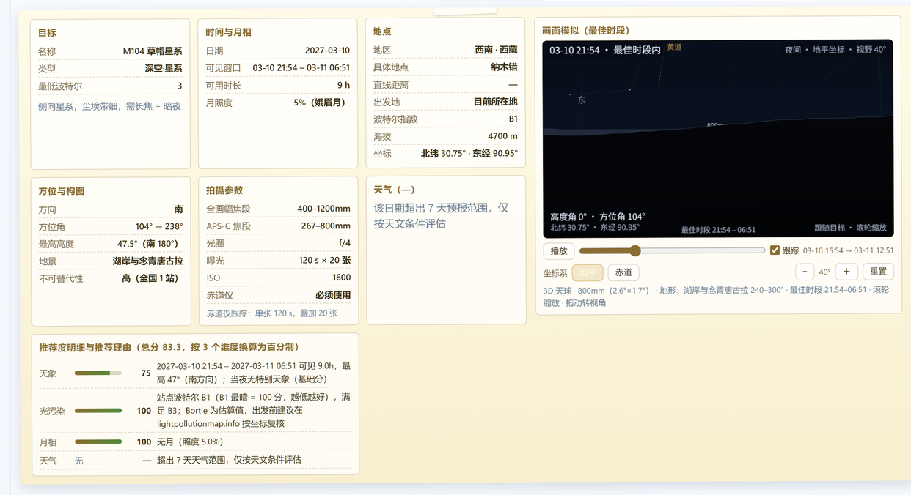
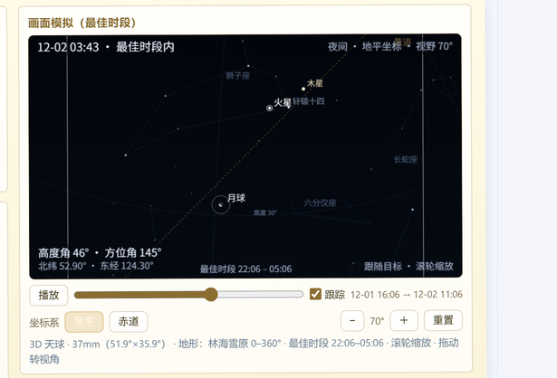
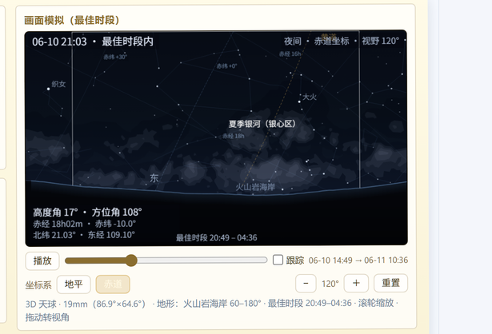
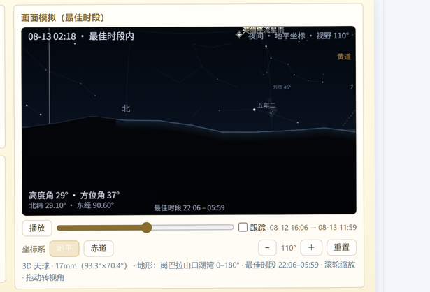

星野计划：把「去哪拍、什么时候拍、怎么拍」一次算清
星野计划 · 用户指南（公众号版）
这份指南按「查询 → 结果 → 便签 → 参数 → 画面模拟 → 数据」的顺序介绍全部功能，配 9 张真实界面截图。适合收藏后按图索骥。

查询区与页头
页头一行给数据新鲜度与天气覆盖，下面三行是全部查询条件，底部「查询 / 重置」。
目录
- 三种入口
- 安装与打开
- 查询区
- 结果列表
- 展开详情（便签）
- 拍摄参数怎么来的
- 画面模拟
- 天气
- 评分模型
- 数据与更新
- 在对话里怎么问
- HTTP API
- 已知边界与常见问题
- 术语表
· · ·
1. 三种入口
同一套能力，三个入口，数据与界面完全一致：
| 入口 | 位置 | 适合 |
|---|---|---|
| 会话 Tab | 侧边栏「星野计划」 | 边聊边规划，不离开对话 |
| 独立页面 | http://127.0.0.1:<端口>/astro-plan/ | 大屏看表格与画面模拟，可分享链接 |
工具 astro_plan | 对话里让模型调用 | 让模型做检索、比较、写成结论 |
三者共用同一份规划层（lib/planner.js）与同一套数据，所以同一天同一条件在三个入口给出的结果相同。
2. 安装与打开
安装
按你拿到的分发方式任选其一：
# 1) 插件市场：插件 → 发现 → 添加索引 → 粘贴索引地址 → 安装「星野计划」
# 2) npm
dsh plugin --profile desktop add dsh-astro-plan@0.1.1
# 3) 本地目录（开发用）
dsh plugin --profile desktop add "<本目录绝对路径>"装完重启 DSH 桌面应用。验证：
curl http://127.0.0.1:<端口>/astro-plan/api/meta页面参数
| 参数 | 作用 |
|---|---|
?theme=light / ?theme=dark | 强制浅色 / 深色（不写则跟随系统） |
?withSim=0 | 关闭画面模拟，查询结果更小更快 |
颜色与主题
默认深色。宿主是浅色外观（或系统为浅色且外观设为「跟随系统」）时自动切浅色；会话 Tab 直接采样宿主背景色，宿主换主题时 Tab 跟着换。
打不开页面时
- 确认端口：以「设置 → 关于」或启动日志里的
127.0.0.1:<端口>为准，端口每次启动可能不同。 - 页面 404 说明宿主插件没加载：检查
~/.dsh/profiles/desktop/package.json里dsh.profile.bundles是否包含dsh-astro-plan，以及node_modules/dsh-astro-plan是否真的存在。 - Tab 不出现但页面能开：按一次
Ctrl+R重载窗口（Tab 由前端 bundle 注册）。
3. 查询区
查询区按三行分组，每行要素固定在同一行，底部是「查询」「重置」。
3.1 拍摄日期
- 夜的定义：当日 15:00 至次日 09:00。所以你选
03-10，覆盖的是 3 月 10 日入夜到 11 日清晨。 - 跨度上限 365 天：一年跨度内每一夜都会参与评估（不再截断前 60 夜）。
- 前端即时校验：开始日期晚于结束日期、或跨度超过上限时直接提示原因，不发检索。
- 打开页面不会自动检索；「重置」只恢复默认条件并清空结果，同样不自动查。
3.2 目的地及出发地
| 字段 | 说明 |
|---|---|
| 目标地区 → 目标省份 → 目标地点 | 三级联动；也可只选到省份/地区，让全库参与（173 站） |
| 出发地点 | 默认「目前所在地」，用浏览器定位算直线距离；被拒时先用上次定位（localStorage），再退化为按北京估算，并在页头小字标明 |
距离与车程（直线 × 1.2–1.6）出现在便签「距离与行程」里，表格不再单列。
3.3 拍摄目标

目标类型两级菜单
- 目标类型：两级菜单。左列是分组（不限 / 星野 / 日月 / 行星 / 深空），悬停切右列，点中后按钮显示「分组 · 类型」；点空白或按
Esc收起。 - 18 个类型（含「不限」）：
| 分组 | 类型 |
|---|---|
| 星野 | 银河 · 流星雨 · 彗星 · 星轨 · 黄道光 · 极光 |
| 日月 | 日食 · 月食 |
| 行星 | 单个行星 · 冲日 · 大距 · 合 |
| 深空 | 全部深空 · 星系 · 星云 · 星团 · 行星状星云 |
- 高度角 ≥：默认
0°，地平线以上即可参与评估；只想看高空目标时填 20 / 30。 - 波特尔指数 ≤：光污染上限，1–9，默认 6。想严格只看暗夜就调 3–4。
3.4 查询与重置
- 「查询」才发请求；结果按推荐度排序，分页显示。
- 站点 × 夜数超过约 9000 时按区域均衡抽样，并在备注行说明（保证一年跨度也能数秒返回）。
4. 结果列表

结果表
八列：#、推荐度、目标类型、目标、拍摄地点、日期、最佳时段、最高高度。
- 最佳时段单行给出起止：
03-10 21:53 → 03-11 06:54。 - 最高高度带方向：
49.1° 南，取高度最高那一刻的方位。 - 点击整行展开/收起详情便签（见下一节）。
- 分页：20 条/页，序号跨页连续；底部有上一页/下一页与页码输入框（回车或「跳转」）。

一页 20 条与分页条
- 表格上方两行小字：第一行是数据新鲜度（数据库更新时间、站点库 173 个、覆盖 34 省、天气窗口、彗星颗数、出发地点），第二行是统计（候选条数、评估站点数、排序说明、查询备注）。

分页条
分页条：页码输入框 + 跳转，序号跨页连续。
5. 展开详情（便签）

便签详情
点任意结果行，下方展开一张便签。宽屏时左侧七块、右侧整列只放画面模拟；屏幕较窄（<1100px）时画面模拟排在最上面，七个便签移到它下方：
| 区块 | 内容 |
|---|---|
| 目标 | 名称、类型、最低波特尔、题材提示；彗星另有视星等 / 距日角 / 距地距离 / 日心距；「合」另有角距 |
| 时间与月相 | 日期、可见窗口、可用时长、月照度（含月相名，如 5%（蛾眉月）） |
| 地点 | 地区 · 省份、具体地点、直线距离、出发地、波特尔指数、海拔、经纬度（北纬 30.75° · 东经 90.95°） |
| 方位与构图 | 方向、方位角区间、最高高度（带方位名）、地景、不可替代性 |
| 拍摄参数 | 全画幅 / APS-C 焦段、光圈、曝光、ISO、赤道仪要求，附一行曝光依据 |
| 天气 | 7 天内给逐时天气摘要；更远只写「仅按天文条件评估」 |
| 推荐度明细与推荐理由 | 各维度得分条 + 分数 + 理由文字；标题写明「按 N 个维度换算为百分制」 |
几个容易忽略的细节：
- 维度随题材变化：日食只算「天象 / 天气 / 地景」；月食不算月相（月球自己就是目标）；行星与深空不算地景（主体优先，地景只作构图参考）。
- 缺维度不扣分：天气数据缺失时按剩下的维度归一，不会当成 0 分。
- Bortle 提醒在「光污染」那一行的说明末尾（建议用 lightpollutionmap.info 复核）。
- 展开有过渡：
grid-template-rows: 0fr ↔ 1fr+ 透明度 260 ms，收起时内容保留到过渡结束。 - 便签最大 64vh 内部滚动，右侧画面模拟
sticky，滚动左侧时画面不跑。
6. 拍摄参数怎么来的
参数由规划层算好，页面只负责显示。不同题材用不同口径：
| 题材 | 口径 | 实测区间示例 |
|---|---|---|
| 银河 / 流星 / 星轨 / 黄道光（无赤道仪，广角） | 500 法则：500 ÷ 等效焦距 | 银河 20.8–35.7 s |
| 彗星（无赤道仪，长焦） | 300 法则（更保守）：300 ÷ 等效焦距 | 0.8–3.5 s × 40 张 |
| 月面 / 月食 | Looney 11：f/11·ISO 100 = 1/100 s 换算，再按 2^(13·食分^1.5) 压暗 | 1/1543–1/2 s |
| 日食 | 巴德膜 ND5 经验值：f/8·ISO 100 = 1/1000 s 换算，±1 档 | 1/8000–1/2000 s |
| 极光 | 极光经验值：f/2.8·ISO 1600 = 4 s，强 Kp 减半、弱 Kp 加倍 | 2–8 s × 30 张 |
| 行星 / 冲日 / 大距 | 赤道仪 + 视频叠加：1/20 s × 500 帧，取 10–20% 最优帧，ISO 800 | — |
| 深空 | 赤道仪 + 长曝叠加：120 s × 20 张，ISO 1600 | — |
- 焦段给区间：一支变焦两端的安全曝光不同，所以写成
20.8–35.7 s；APS-C 按 1.5× 裁切换算（同镜头13.9–23.8 s）。 - 光圈只给一个 f 值（
f/2.8、f/4、f/10），不再出现「原生 + 增倍镜」这类说明。 - 深空一律按赤道仪算（
必须使用），不随你是否勾选赤道仪变化。 - 「合」按角距反推同框焦段：
```
张角 = 角距 + 两侧视半径（框以两颗中点为心；含月时每侧一个月面半径）
需要视场 = 张角 × 1.8（构图余量）
全画幅 f = 24 ÷ (2·tan(视场/2)) ← 用画幅短边反解
```
例：金星合火星 0.31° → 需 0.7° 视场 → 1100–2000 mm、赤道仪必须、5 s × 20 张；木星合月 0.87° → 360–670 mm，画面里最亮的是月球，曝光改按 Looney 11（毫秒级），长焦也不必上赤道仪。
7. 画面模拟
便签右侧整列是一副可交互的 3D 天球，默认停在最佳时段开始那一帧、相机对准目标质心。
7.1 投影与视野
- 立体投影（stereographic）：观测点在球心，天球先投到视线相切平面（
r = k·tan(θ/2)）再映射到屏幕——等角、边缘不拉伸，整圈银河拱桥不会被拉扁。 - 天区填满整幅画面：视场按内切圆角直径，投影圆盘半径固定取对角线一半，所以 5°–180° 每一档四角都在可投影半球内，没有圆形取景框、没有盘外黑边。
- 缩放 5°–180°：滚轮或
−/＋；180° 是全天区。画布按显示尺寸出图（乘设备像素比，上限 1680），窗口变化会重排重画。
7.2 星空与银河
- 银河来自真实等值线：d3-celestial 的 5 级亮度等值线抽稀到 0.25°，逐环做近平面裁剪后按 even-odd 填充，暗尘带是真正的洞；填充走加色混合（
lighter），任何视角下都不会比天空暗。 - 背景亮度跟着地平高度走：天空按「地平 0° → 22° → 65° 天顶」铺色，拖动画面时同一块天的明暗不变。
- 晨昏偏色朝太阳：天文/民用晨昏时天空由 64 条竖条插值，日落那一侧泛橙、对面偏冷。
7.3 日月与月相

合月与真实月相
火星合月：月球画成真实的蛾眉月，亮面朝太阳；虚线是黄道，右上角是视野读数。
- 太阳按日地距、月球按地心距算视直径（约
0.49°–0.56°），放大后自然变大。 - 月相是真实相位：明暗界限是一条真正的晨昏线椭圆，暗区面积 = 1 − 照明比例，亮面朝向太阳；暗面填「当处天空色」，看起来是缺了一块而不是挖了个黑洞。
- 月食按食分压暗偏红，全食时是一枚暗红圆盘。
7.4 地景与天际线
- 天际线来自实测高程：沿每站 36 个方位、1.5–140 km 采地形瓦片（约 600 m 像元），按
atan((h − h0 − d²/2R)/d)换算视线仰角（含地球曲率与折射），分近景（1.5–25 km）与远景（25–140 km）。 - 只保留林线、水面反光、建筑块这类真实存在的细节，不再叠三角形尖。
7.5 坐标网格与读数
| 模式 | 网格 | HUD 附加 |
|---|---|---|
| 地平 | 高度圈 30°/60°、方位线每 45°，地平线上标 北/东/南/西 | 高度角、方位角 |
| 赤道 | 赤纬圈、赤经线每 2h、天赤道虚线 | 赤经、赤纬（如 赤经 18h02m · 赤纬 −10.0°） |

赤道坐标模式
切到赤道坐标：网格换成赤纬圈与赤经线，HUD 给出赤经赤纬；这一帧是夏季银河与银心。
HUD 四角固定给：左上「时间 · 是否在最佳时段内」、右上「夜间/晨昏/白天 · 坐标系 · 视野」、左下「高度角 · 方位角」与站点经纬度、底部「最佳时段」。
7.6 播放与跟踪
- 进度条覆盖最佳时段并前后外扩，最多 72 帧（时段长时自动放稀，最小 3 分钟一帧）。
- 跟踪勾选框：勾上=相机跟着目标（目标恒在画面正中、地景掠过）；取消=固定机位；手动拖拽会自动取消勾选。
- 缩放只改视场、不动机位，所以勾着跟踪缩小目标不会跑掉。
- 重置回到刚打开时的画面（默认机位 + 最佳时段开始帧 + 停止播放 + 地平坐标）。
7.7 天象件与特殊标记

流星雨画面
流星雨：辐射点十字标记，流星沿大圆从辐射点向外飞，每帧 10–18 颗、持续 2–3 帧淡出。
- 流星雨：辐射点十字 + 确定性生成的流星。
- 彗星：彗尾朝背日方向，视星等越亮、地心距越近尾越长。
- 银河 / 黄道光：只画取景框与名字，不画中心光晕（它们的目标点只是构图中心）。
- 深空：保留柔光标记（目标本身就是一团光）。
- 极光：没有固定方位，不出模拟，只给说明。
8. 天气
- 日期落在未来 7 天内时接入 Open-Meteo 逐时天气：云量、降水、风、湿度、透明度折算成 0–100 的天气分。
- 更远的日期只按天文条件评估（便签会写明），推荐度按剩余维度归一。
- 页头小字给出本轮天气窗口（如
天气 2026-11-09 ~ 2026-11-16）。
9. 评分模型
| 维度 | 权重 | 说明 |
|---|---|---|
| 天象 | 0.4 | 可见性（高度、时长）与事件本身的分值合并 |
| 天气 | 0.2 | 7 天内来自天气服务；更远不参与 |
| 地景 | 0.2 | 前景与目标的配合度、不可替代性 |
| 光污染 | 0.1 | 波特尔指数，越低越好 |
| 月相 | 0.1 | 月照度越低越好；月食/日食等题材不参与 |
- 按参与的维度归一：缺哪个维度就把权重从分母里去掉，不会把缺失当 0 分。
- 分数怎么读：≥80 条件很好、可以直接去；60–80 值得去但要有取舍；<60 建议换目标或换日期。
- 便签里给出每个维度的分数条与理由（例如「站点波特尔 B1（B1 最暗 = 100 分）」）。
10. 数据与更新
| 数据 | 规模 | 来源 |
|---|---|---|
| 站点库 | 173 个，覆盖 34 个省级行政区、8 个地区 | 自建（含海拔、波特尔、地平线、地景标签） |
| 目标库 | 71 个：深空 47（星系 12 / 星云 18 / 星团 11 / 行星状星云 6）+ 银河 3、黄道光 2、星轨 1、极光 1、流星雨 11、行星 4、日月食 2 | 自建 + 通用星表 |
| 彗星库 | 103 颗（2024–2044 年最亮 ≤ 15 等） | MPC 轨道根数，每周首次启动自动重建 |
| 天球图层 | 632 颗亮星（星等 ≤ 4.2，带中文星名）、76 个星座、5 级银河等值线 | d3-celestial（BSD-3-Clause） |
- 页面第一行小字显示「数据库 <时间> 更新」，就是彗星库最近一次成功重建的时间。
- 星表在构建期联网抓一次存成 JSON，插件运行时除天气外不联网。
11. 在对话里怎么问
直接用自然语言，模型会调用 astro_plan。几个好用的问法：
- 「这周末海坨山能拍什么？」（近日期 → 带天气）
- 「今年 8 月英仙座流星雨，华北哪个站点最好？」
- 「明年 3 月去西藏拍深空，推荐 3 个目标，要星系」
- 「10 月 14 日北京日食能看到吗？」
- 「下个月有没有适合拍银河的暗夜窗口？」
- 「M42 和 M31 哪个更适合我这周去拍？」
- 「给我一条青海冷湖的整夜时间轴」
- 「这几个目标的焦距和曝光分别是多少？」
astro_plan 的五个动作：
| action | 作用 |
|---|---|
search | 按条件检索推荐（默认） |
window | 某站某夜逐小时时间轴 |
meta | 数据概览（类型、地区、站点数、天气覆盖） |
events | 天象事件（流星雨、季节银河窗口等） |
params | 某个目标的拍摄参数（targetId，如 m42） |
常用参数：eventType（18 类）、location（站点/城市/省份/lat,lon/「全国」）、region、province、dateStart、dateEnd、minAltitude、maxBortle、limit、originLat/originLon。
12. HTTP API
# 元数据
curl "http://127.0.0.1:<端口>/astro-plan/api/meta"
# 与工具同参的检索
curl "http://127.0.0.1:<端口>/astro-plan/api/search?eventType=deepsky&dateStart=2027-03-10&dateEnd=2027-03-12&siteLimit=40"
# 单站单夜逐小时时间轴
curl "http://127.0.0.1:<端口>/astro-plan/api/night?site=haituo&date=2027-03-10"
# 不要画面模拟（响应更小）
curl "http://127.0.0.1:<端口>/astro-plan/api/search?...&withSim=0"13. 已知边界与常见问题
边界（设计如此，不是 bug）
- 7 天以外没有天气，推荐度只反映天文条件。
- 日食/月食只在事件当天有结果；冲日、大距、合同理（星历现算）。
- 极光没有画面模拟（没有固定方位）。
- 深空一律按必须使用赤道仪给参数。
- 「合」的角距太小时，同框需要很长焦段，别惊讶 1000 mm 以上。
FAQ
- 页面能开但 Tab 不出现：
Ctrl+R重载窗口；仍不行就重启应用（Tab 由前端 bundle 注册）。 - 端口是多少：以启动日志 / 关于页显示为准，每次启动可能变化。
- 出发地点总显示「按北京估算」：浏览器定位被拒，允许定位或手动选出发地。
- 数据更新时间不是今天：彗星库每周首次启动重建，失败时保留上次数据并在
db-stamp.json记录错误。 - 浅色主题下某些字看不清：用
?theme=light或?theme=dark显式指定，避免与宿主主题混搭。
14. 术语表
| 术语 | 含义 |
|---|---|
| 波特尔（Bortle） | 夜空亮度分级 1–9，1 最暗、9 城市中心 |
| 晨昏 | 太阳高度 −18°～+4° 的过渡时段，天空还有余光 |
| 月照度 | 月球被照亮的比例，0% 新月、100% 满月 |
| 冲日 | 行星与太阳分处地球两侧，整夜可见、最亮 |
| 大距 | 内行星离太阳角距最大，最易观测 |
| 合 | 两个天体角距很小，可同框 |
| 黄道光 | 黄道面尘埃散射的阳光，日落后西天 / 日出前东天的锥形微光 |
| 银心 | 银河中心方向（人马座），夏季银河最亮的一段 |
| 赤道仪 | 抵消地球自转的跟踪装置，长曝必需 |
| 视场 / 焦距 | 全画幅视场 ≈ 2·atan(36/(2f))（横向）、2·atan(24/(2f))（纵向） |
· · ·
版本：0.1.1 · 许可：MIT · 作者：Sirius YANG
星野计划（dsh-astro-plan）· 作者 Sirius YANG · MIT 许可